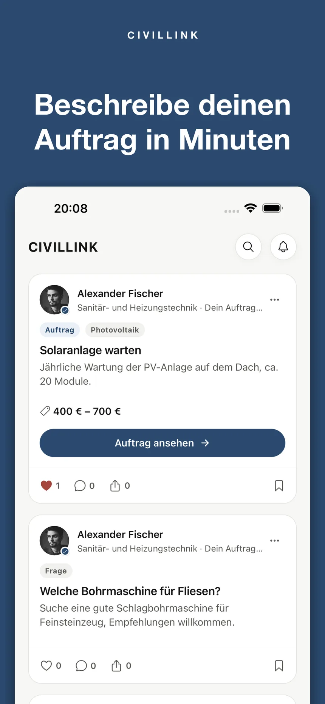
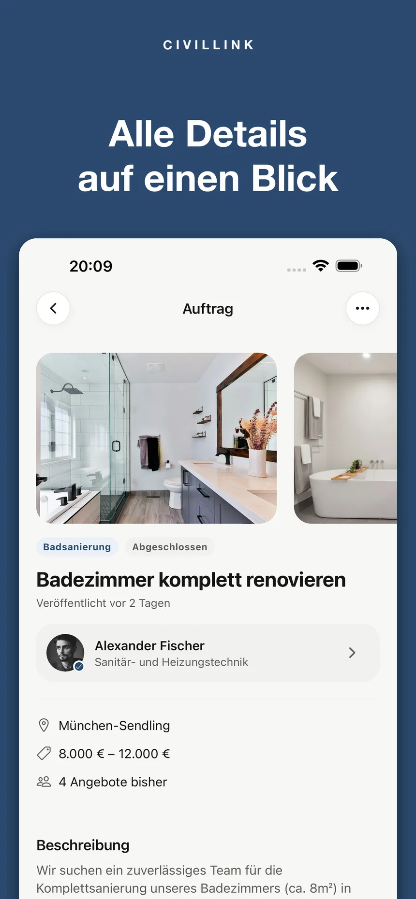
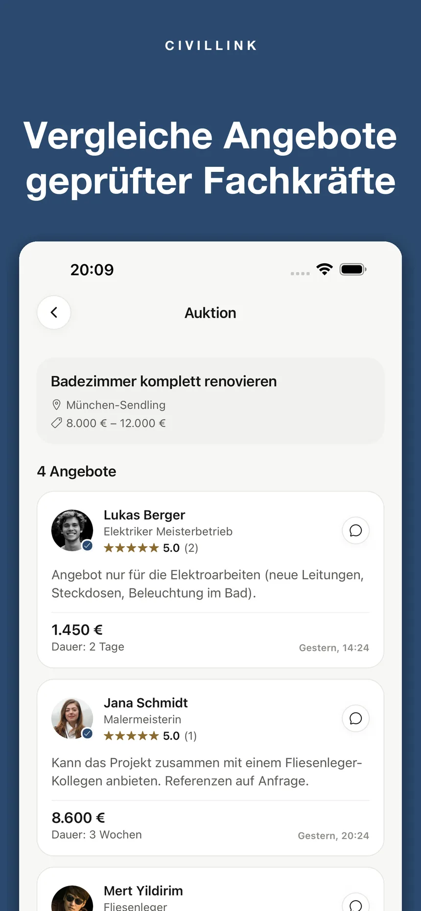
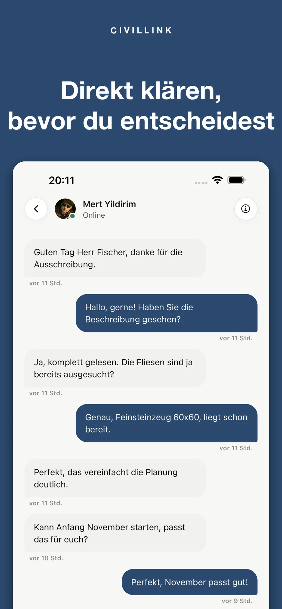

Ausgangslage
Aufträge am Bau laufen oft über Anrufe, E-Mails und Empfehlungen: Angebote sind schwer zu vergleichen, Absprachen verstreut. CivilLink bringt Ausschreibung, Angebote, Chat und Zahlung an einen Ort.
Lösung
Eine App für Auftraggeber und Fachbetriebe: Auftrag mit Fotos, Ort und Budget beschreiben, Angebote vergleichen, im Chat klären und über Stripe bezahlen. Konzept, Entwicklung und Veröffentlichung im App Store habe ich allein umgesetzt, in Partnerschaft mit CivilCMC.
Aufträge ausschreiben mit Beschreibung, Fotos, Standort und Budgetrahmen
Angebote vergleichen: Preis, Dauer, Bewertungen und Nachricht auf einen Blick
Direkter Chat zwischen Auftraggeber und Fachbetrieb
Sichere Zahlung über Stripe — Freigabe erst, wenn der Auftrag abgeschlossen ist
Auszahlung an Fachbetriebe über Stripe Connect
Bewertungen aus abgeschlossenen Aufträgen
Melden und Blockieren von Inhalten und Nutzern, jede Meldung wird geprüft
Profile mit Gewerk, Stärken und Sprachen; Aufträge aus der Region entdecken
Für Fachbetriebe kostenlos: keine Provision, keine Grundgebühr




App-Store-Screenshots. Aktuell 5+ Nutzer, Android folgt.